FlashAttention：分块、在线 softmax 与 IO 优化
本文目录 11 个章节 · 展开查看
先抓住这篇笔记的问题：Attention 的矩阵乘法可以分块，softmax 却要知道一整行的分母。怎样一块一块地计算，又得到与整行一起算相同的结果？下面先解释存储瓶颈，再推导分块之间需要传递哪些量。
FlashAttention 通过分块和融合减少 GPU HBM 与片上存储之间的数据搬运，避免把完整的注意力分数/概率矩阵写入 HBM。它在实数运算意义上计算相同的注意力；浮点运算顺序变化会引入数值差异。密集注意力的二次计算量不会因此消失。
1. 注意力与存储瓶颈
考虑一个长度为 的序列和其中一个注意力头。令 分别表示 query、key、value 矩阵，，这里 是该头的 query/key 维度。每一行 query 通过与所有 key 做点积，判断应该从各个位置的 value 取多少信息。
我们把点积经过缩放和掩码后的分数矩阵记为 ，把 softmax 后的注意力权重记为 ，最终加权得到的输出记为 ：
为注意力掩码，例如因果注意力会屏蔽未来位置。softmax 沿 key 维执行，即对每个 query 的一整行分数归一化，让这一行的权重之和为 1。 再用这些权重对 value 求加权和。
朴素实现可能先把完整 写入 GPU 主显存 HBM，再读出做 softmax，将 写回 HBM，最后又读出 去乘 。 与 的大小都是 ，因此序列越长，中间结果的存储与搬运越昂贵。
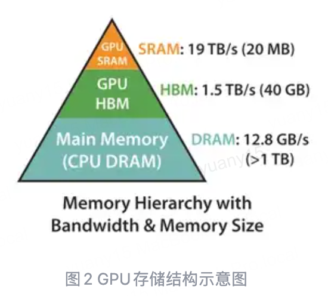
HBM 容量大，适合放模型与大张量；片上 SRAM 容量小，但访问通常更快。FlashAttention 希望让一个能装进片上存储的小块连续完成多步运算，减少把中间结果反复搬进搬出 HBM。图中的具体容量、带宽是硬件示例。
这也解释了为什么只看 FLOPs 不够：计算受限时，主要时间花在运算，例如许多大矩阵乘法；访存受限时，主要时间花在搬数据，例如不少逐元素、归约操作。实际属于哪一类仍取决于张量形状与实现。
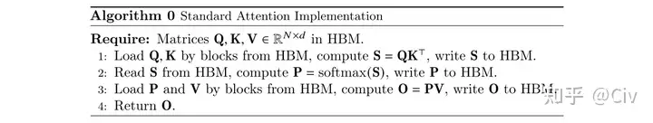
把相邻操作融合到一个内核里，可以让一个块的中间结果留在片上。真正的难点是：一个块只看见部分 key，而 softmax 的分母需要整行所有 key 的分数。接下来的推导就是为了解决这个全局依赖。
2. 稳定 softmax
先固定一个 query，只看它对所有 key 的一行分数 。 是它对第 个 key 的分数，、 都是遍历 key 位置的下标。普通 softmax 会给每个 除以整行指数和。
为避免较大的分数在取指数后溢出，我们定义三个辅助量： 是这一行的最大分数； 是减去最大值后的第 个指数权重； 是这些权重的总和，充当归一化分母：
这一步为什么等价： 分子、分母同时除以 ：
这里 还不是概率；只有将每个 除以共同的 ，才得到总和为 1 的概率。后面分块时，正是分别维护“分子采用的最大值基准”和“分母的总和”。
所有分数共同减去最大值，不改变结果，但能避免指数上溢。这里是减去最大值，不是除以最大值。
公式配图（可选）
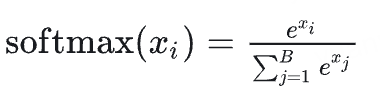
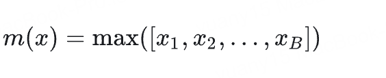
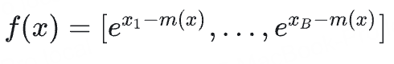
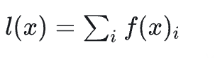
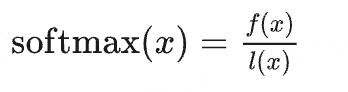
3. 两个块如何合并
3.1 先分别计算两个块的局部量
将同一行分数切成互不重叠的两块，第一块包含的位置组成集合 ，第二块组成 ，二者合起来覆盖整行。例如四个 key 可以分成 、。
对于任意一块 ，我们先只用块内分数，定义局部最大值 、局部指数权重 、局部分母 和局部概率 ：
这里先假设每个块至少有一个有效的有限分数；完全被 mask 的块按零贡献处理，实现时需避免对负无穷作未定义的相减。
局部概率回答的是“如果只在这一块里选择，应怎样分配权重”。它不知道另一块里是否有更大的分数。每个块的概率各自和为 1，直接拼接后总和为 2，因此不能把两组局部概率直接当作整行结果。
3.2 把两个块换到同一个最大值基准
两块分别减去了 、，指数权重使用的基准不同，不能直接相加。先定义共同基准 。再定义 和 ：它们分别把第一块、第二块的指数权重换算到这个共同基准：
对第二块的每个分量，加减局部最大值 ：
第一行是希望得到的全局指数权重；第二行在指数里加上再减去 ，数值不变；第三行把指数拆成乘积，认出其中一项就是已经算过的局部权重。这样只需给第二块整体乘一个 ，不用重新逐元素取指数。
第一块同理得到 ；整个指数向量为 ，此时还没有除以全局分母。
3.3 分母按相同系数缩放后相加
把全局指数和按两个块拆开：
3.4 统一除以新的全局分母
因此各块对全局 softmax 的贡献为：
两个块现在共用最大值 和分母 ，所以拼接后的概率之和为 1。对某一个 key 的最终权重，既保留了它自己的分数，也考虑了另一块所有 key 对分母的贡献。
处理第 3、4、… 块时，把已经处理过的全部块视为“第一块”，新读入的块视为“第二块”。此时 表示累计统计量，重复以上四步就能继续合并，不需要把之前的全部分数读回来。
公式配图（可选）
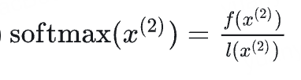
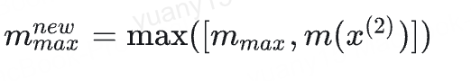
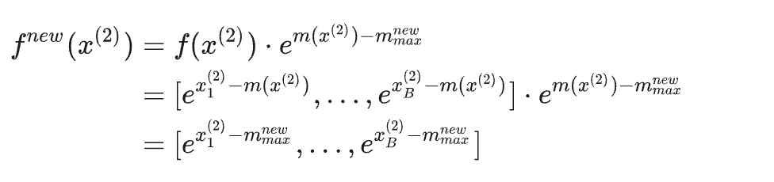
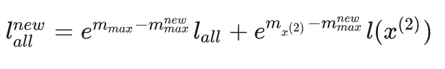
4. 为什么不必保存完整注意力矩阵
Attention 最后需要的是 value 的加权和，而不是把整行概率保存下来。因此，对第 个块，我们定义向量 为它的未归一化输出累加值。这里 是第 个 key 对应的 value 向量，先乘指数权重，再在块内相加：
因为 使用的仍是块自己的最大值 ，合并时它也要乘与分子相同的换算系数。合并后的 是整行未归一化输出，最后除以全局分母 ，才得到当前 query 的注意力输出 ：
输出也按同样规则合并，不能只合并 softmax 分母。 将加权和按块展开：
也可以选择维护已经归一化的局部输出 、，则用 代入：
这说明合并两个局部输出不能简单取平均：需要先用各自的 恢复未归一化加权和，按 换到同一个基准，再除以合并后的分母。对于多个 query 行，每行都有自己的最大值、分母和输出累加器；批量计算时分别沿行应用这套规则。
因此每个 query 行可维护最大值 、指数和 、输出累加器 ，依次处理 key/value 块。块内仍然需要临时计算分数和指数；避免的是在 HBM 保存完整 矩阵，而不是完全不产生任何分数矩阵。
反向传播可依据保存的统计量重计算块内分数/概率。用额外局部计算换取更少的 HBM 读写，并减少中间张量显存。
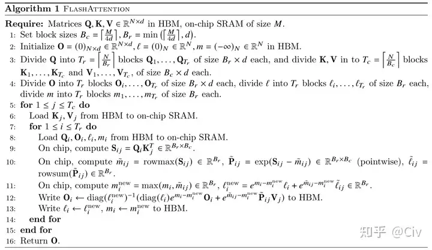
可以按操作顺序理解整个前向：读入一个 query 块和一块 K/V → 在片上计算局部分数 → 更新每行的 → 丢弃该块临时分数 → 继续下一块 K/V → 全部处理后输出 。保留下来的是少量逐行统计量与输出，不是完整分数矩阵。
5. FlashAttention-2
FA2 的重点包括：减少非矩阵乘 FLOPs、沿序列维增加线程块并行度、调整 warp 分工以减少共享内存通信。FA1 已经使用矩阵乘法，因此“把向量计算改成矩阵乘法”不能准确概括升级。
原论文报告的约 50%–73% 峰值 FLOPs/s 利用率针对 A100 上特定 attention 配置，不能直接等同于任意完整模型的训练利用率。
6. FlashAttention-3
FA3 针对 Hopper 架构利用异步 Tensor Core、TMA、流水重叠以及 FP8 等能力。论文中最高约 75% 的利用率等结果来自具体 H100 配置，不是跨硬件、跨形状的固定保证，也不是所有设置都会从 30% 升到 75%。
7. 来源
- FlashAttention：IO-aware exact attention、分块与重计算。
- FlashAttention-2：算法与工作划分。
- FlashAttention-3：Hopper、异步和低精度。